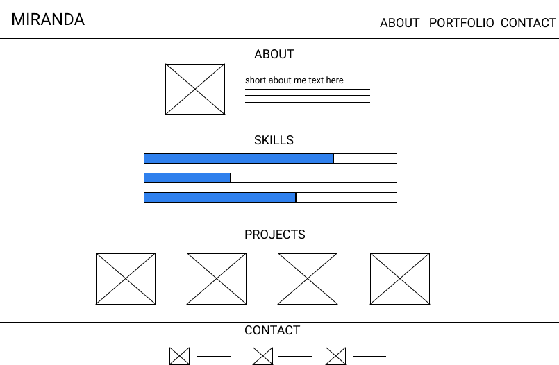
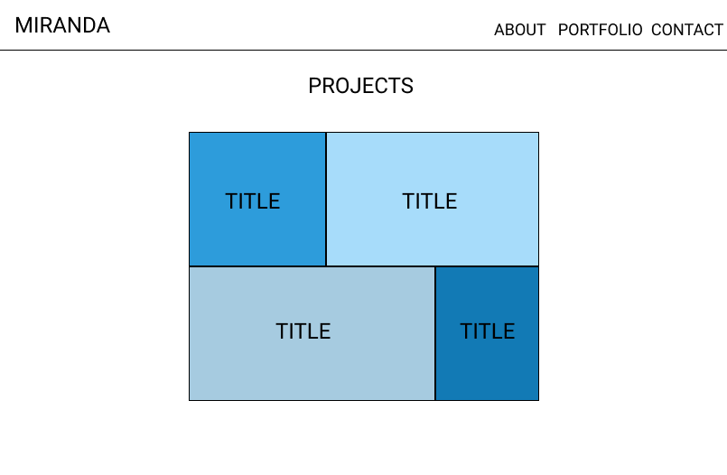
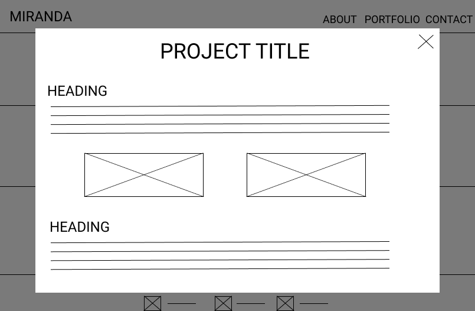
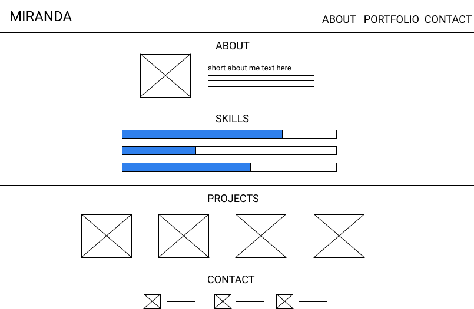
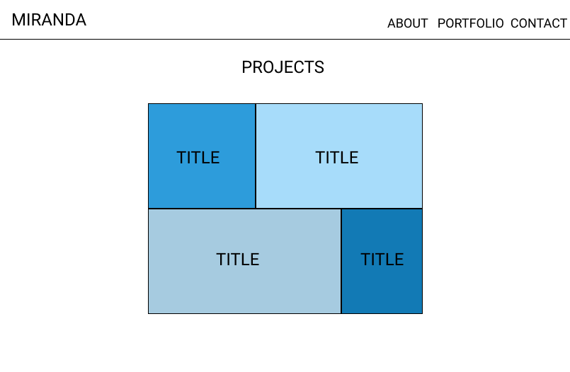
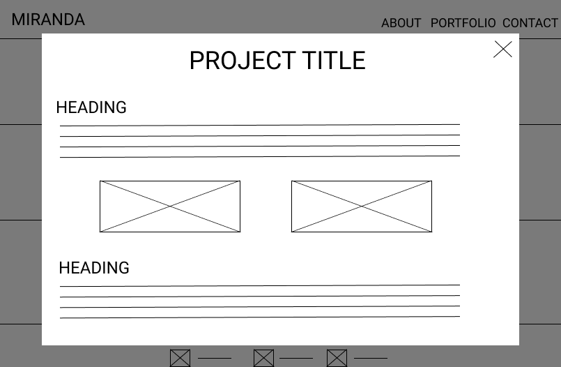

Porfolio Design
Introduction
This page details the process I went through to design my overall portfolio site. Specifically, I will discuss what I did in the following three stages:
- Planning
- Designing
- Implementing
Planning
In the planning process, I first looked for inspiration, then decided the different pages and sections to be included in my portfolio. Next, I searched and decided on the resources to use for the design and implementation process.
Inspiration: To find inspiration, I searched the web to examine various UI/UX designer's portfolio and noted elements that caught my attention. Pages/Sections: After finding inspiration, I listed out the different pages and sections to include in my portfolio. Initially, this included:
- landing cover page
- home page
- about me
- skills
- projects preview
- contact me
- separate pages for each project
However, at the implementation stage, I decided to leave out the skills section in the home page. Resources: Finally, I gathered and listed out the resources I needed to carry out the design and implementation process. For brainstorming and designing the layout of the portfolio, I decided to use Figma. For implementation, I decided to use GitHub Pages to host my portfolio. Other resources include:
Designing
To visualize the layout of my portfolio and guide me in the implementation process, I created wireframes to represent the overall framework. Then, I explored different typography and color schemes for the interface.
Using Figma , I roughly visioned how the pages and sections I planned will appear. See "Wireframes" section on bottom of page to see the screen designs. Landing Screen & Navigation Bar: Taking inspiration from other UI/UX portfolios I've seen, I decided to have a landing cover page that will cover the user's whole screen and serve as a welcome. I designed this landing screen to include my name and location, as well as an "Enter" button to take the user to the main body screen. (However, in implementation, I took out my location and replaced "Enter" button with a down arrow.) The navigation bar located at the top of the screen is also visible on the cover page, as well as from any section and page of the portfolio. Main Body: Upon clicking on the "Enter" button (now: down arrow) or simply scrolling down, the user will navigate to the main body screen. This includes four sections in the following order: About me, Skills (take out in implementation), Projects, and Contact Me. About Me & Skills: The About Me section includes a picture of me and a brief paragraph, while the Skills section was planned to list some of my technical skills. Each partially colored horizontal bar was to represent my expertise of a particular skill. The more filled in a bar, the more knowledge and experience I have in regards to that skill. Projects & Contact Information: Next, the Projects section includes a preview picture of the different projects I've created or contributed to. Clicking on a picture will display an overlay screen that describes the associated project. Lastly, the Contact Me section will serve as the footer. An icon will be displayed as well as the actual contact information. Individual Project Screens: I also wireframed a sample layout for the project overlay screen. The title of the project will be displayed at the top of the page aligned to the center. Below will be different headings, pargraphs, and visualizations or prototypes if applicable. To exit the overlay, the user can click on the "X" located on the top right or click anywhere else other than the overlay (click background gray area). Color & Typography: The main color used in the portfolio is a navy blue (#1B2745). I chose this color because blue is a calming colors; its neutral tone makes it easy on users' eyes. Similarly, another shade of blue (#395291) is used for headings. As for the font, I chose Google Font's Quicksand to use throughout the portfolio.
Implementing
In the implementation process, I started coding my portfolio as invisioned in the design phase. Inevitably, I went back and forth between designing and coding during this stage.
Landing Screen & Navigation Bar: Like the wireframe, the landing screen consists of my name. However, I decided to take out my location following my name to make the design even more simple and straightforward. Additionally, I added my contact information right below my name, as represented by icons. I also changed the "Enter" button to a simple down arrow. Users can click the arrow or scroll down to see the main body screen. The animated background of the landing screen is from particles.js, and the navigation bar was created with Bootstrap's navbar component. At the very top of the screen, the navbar blends in with the navy blue background of the landing page. However, upon scrolling, the navbar turns into a white background. This was designed like so to not distract users from the main body content. About Me & Skills: The About Me section was done with a simple portrait and a brief paragraph just like what I had designed in the wireframe. As for the Skills section that I had planned for, I decided to take this out, because the placement appeared awkward when I actually coded the screen. A screenshot of this implementation can be seen below this paragraph. The Skills section may be implemented in the future, but for now, I believe that each project itself is sufficient to illustrate my skills.

Projects: Though I originally designed the project section to be presented in a row, with a preview picture to represent each project, I decided to redesign this to make the preview pictures appear larger to the user. So, I went back to Figma and designed an unaligned grid. However, after implementing the unaligned grid, I decided to change the design again. The unaligned grid appears to be too concentrated together, especially with no blank spaces between projects. With my original intention in mind, which was to enlarge the preview pictures, I went for a simple design that combines elements from the first two designs. In short, in the design now, I enlarged the preview pictures and placed two projects per row. This ensures that not only are preview pictures large, but the blank spaces also guarantees that the pictures do not seem too clustered. When the user hovers over a preview picture, an overlay screen appears over the preview and the project title is displayed to provide a brief context of the project. Contact Information: I first implemented this section according to my wireframe. A screenshot of this can be seen below this paragraph. Afterwards, I decided to implement the contact information section with only icons taken from Favicon, and no text. Clicking on an icon will take the user to the relevant page associated. I also decided to add a horizontal dotted line across the page to emphasize that the contact section is a footer. For this reason, I also took out the "Contact" link that I originally designed on the navigation bar, as seen in the wireframe.
Individual Project Screens: Whereas I invisioned each project to be presented through an overlay over the main body screen, I changed this so that when users click on a project, they are taken to a completely new page that only contains the project. Not only does doing so allow a more full screen experience, but it also establishes the fact that my projects are important, and not just a pop-up overlay message.
Wireframes
 




